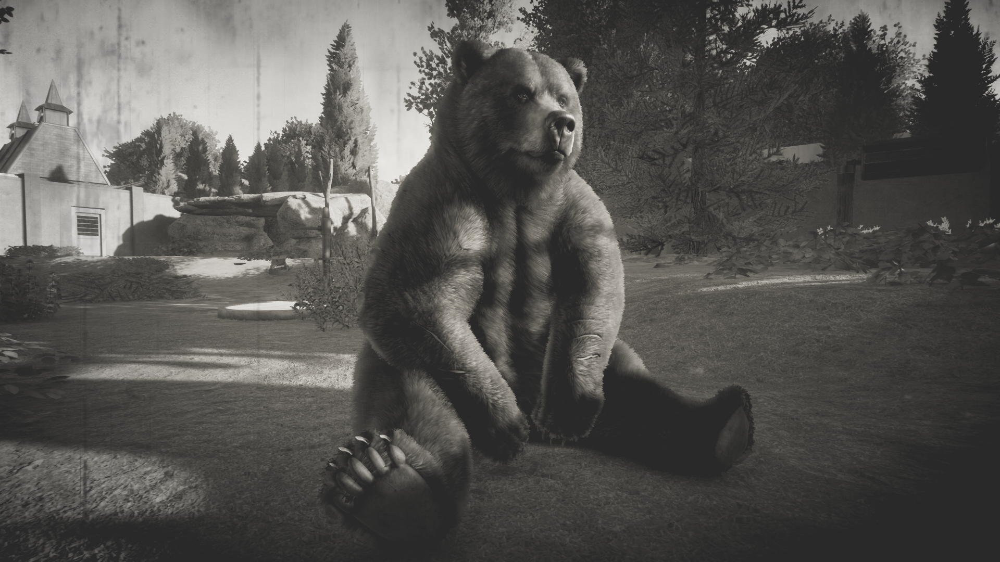

Witaj w Historii Planet Zoo!
Opisano tutaj historię powstawania naszych ogrodów zoologicznych.
Życzymy miłego czytania!
Spis treści
| Zoo | Miejsca | Postacie |
|---|---|---|
| Zoo w Andigawen | Dziki Azyl | Amiliana Empirejska |
| Stare Zoo - Magiotopia | Muzeum ogrodu zoologicznego Andigawen | Ethelien Mumba |
Zoo w Andigawen
Zoo w Andigawen wpisało się nieodmiennie na kartach szanowanych rezerwatów przyrody już ponad 50 lat temu. Założony w Andigawen ogród zoologiczny, którego założycielką była Amiliana Empirejska, był więc nie tyle fanaberią, ile miejscem wnikliwych i rozległych badań naukowych. Miał na celu rozszerzyć wiedzę i badania o zagrożonych gatunkach zwierząt. Jednak zanim to miało miejsce, dyrektorka ogrodu musiała wykazać cierpliwość i bezpieczną opiekę nad innymi, bardziej powszechnymi gatunkami. Początkowymi egzotycznymi gatunkami wprowadzonymi do Andigawen były 4 pary flamingów różowych, wielbłąd dwugarbny oraz parka pawi indyjskich. Wyzwaniem było przyjęcie pierwszego dużego drapieżnika, samca niedźwiedzia grizzly o imieniu Derward, który był największym i jedynym na tą chwilę mięsożercą w zoo. Zwierzę przybyło z prywatnej hodowli ze zwichniętą łapą. Zmiana otoczenia dobrze wpłynęła na niedźwiedzia, który odegrał znaczącą rolę w ogrodzie zoologicznym. Derward przyciągał tłumy gości, a z faktu, że nie bał się ludzi, stał się główną atrakcją zoo.
Andigawen stało się domem, dla wszelkiego rodzaju zwierząt głównie z ratunku i nielegalnego handlu. Ogród liczył w najlepszym swoim okresie prawie 40 gatunków i zamieszkiwały go m.in. hipopotamki karłowate, żyrafy siatkowane, niedźwiedź grizzly oraz gepardy. Było to jedyne miejsce w kraju, gdzie przyznano zoo krytycznie zagrożone łuskowce chińskie. Sukcesem hodowlanym była udana hodowla bizonów amerykańskich, których członkowie stada, byli rozsyłani do innych ogrodów zoologicznych. Właścicielka skromnego majątku równolegle prowadziła także badania botaniczne – m.in. podejmowała próby aklimatyzacji drzew południowych oraz tropikalnych, co poskutkowało powstaniem największej inwestycji Andigawen.
Największym sukcesem Zoo była „Morska Kraina”, gdzie swój dom znalazły wszelkiego rodzaju gady, takie jak para gawiali gangesowych, żółwie słoniowe, warany z Komodo oraz dorosła samica krokodyla różańcowego. W Morskiej Krainie swój dom znalazły również zagrożone hipopotamki karłowate oraz było gotowe ogromne, nowoczesne siedlisko dla hipopotamów nilowych. Jedyny w tamtym czasie dom dla zwierząt egzotycznych w kraju, który przyciągał tłumy. Dzięki niemu frekwencja przekraczała 10 tyś osób dziennie. Próbowano także utworzyć raj dla zwierząt afrykańskich. Początkowo stworzono Safari, które miało na celu pokazanie z bliska, jak wygląda tamtejsza fauna, niestety cały obszar był w fazie budowy i nie udało się dokończyć tej inwestycji przed tragicznym wydarzeniem, które lada chwila miało nastąpić.
Zoo w Andigawen ma za sobą dramatyczną historię. W nocy z 26 na 27 czerwca doszło do eksplozji, który zadał cios zoo. Wybuchł pożar w Morskiej Krainie który doszczętnie zniszczył wszystko, co było na jego drodze i rozprzestrzeniał się dalej. Śledztwo wykazało, że przy jednym transformatorze znajdowały się materiały wybuchowe, które wysadziły ponad 90% obiektu. Praktycznie cała budowla runęła z hukiem na niczego świadome, niewinne zwierzęta. Z Morskiej Krainy ocalały jedynie trzy zwierzęta: para hipopotamów karłowatych oraz samica żółwia słoniowego, ponieważ ich siedliska znajdowały się najdalej wybuchu. Pożar rozprzestrzenił się na sąsiadujące Safari, które ze względu na suchą, afrykańską sawannę było łatwopalne. Zwierzęta z Safari miały jednak więcej szczęścia, udało się bowiem uratować prawie wszystkie zwierzęta, jednak na skutek doznanych oparzeń oraz towarzyszącego dymu, nie wszystkie przeżyły ten ratunek. Żyrafy siatkowane były największą stratą tamtej nocy. Do ocalałych zwierząt doszła samica zebry stepowej, samiec bawoła afrykańskiego oraz parka strusi. Do dzisiaj nie znaleziono sprawcy tego zdarzenia.
Po tym wydarzeniu wszystkie ocalałe zwierzęta trafiły do fundacji Dziki Azyl, gdzie mogły znaleźć bezpieczne schronienie i odpowiednią opiekę, aby dojść do siebie. Amiliana Empirejska wysłała tam również największe skarby Andigawen: stado bizonów, gepardy, niedźwiedzia oraz łuskowce chińskie, a resztę zwierząt postanowiła sprzedać innym ogrodom zoologicznym. Wyprzedaż zwierząt trwała przez miesiąc. Środki zebrane ze sprzedaży dyrektorka zdecydowała przeznaczyć na wykup nowej ziemi dla swoich zwierząt. Odbudowa istniejącego ogrodu nie wchodziła w grę, nie tylko ze względu na znacznie większe środki niż wykupienie nowej ziemi, ale na fakt, że nie czuła się tam już bezpiecznie.
Mimo iż Zoo w Andigawen od tamtego czasu pozostaje zamknięte, do dzisiaj jest to zabytek z niesamowitą historią. Jest to atrakcja turystyczna, która przekazuje wiele informacji na temat początków ogrodów zoologicznych. Obecnie trwają prace konserwatorskie, które pozwalają obudzić klimat tamtych lat i utworzyć z niego Muzeum ogrodu zoologicznego Andigawen.
Stare Zoo - Magiotopia
Historia tego miejsca zaczyna się na biegunie północnym. Magiotopia była nizinnym obszarem, który był pokryty całkowicie śniegiem i lodem. W samym sercu niziny znajdowało się jezioro, w którym były ogromne lodowce zanurzone głęboko pod wodą. To właśnie tu, Amiliana Empirejska otworzyła swój drugi ogród zoologiczny, który miał być kontynuacją wnikliwych badań naukowych. Nazwa ogrodu początkowo była kojarzona z nazwą kraju w jakim Amiliana utworzyła ogród, podobnie jak w poprzednim zoo. Początki nie należały do najłatwiejszych ze względu na towarzyszące warunki pogodowe, gdzie temperatura dobijała aż do - 25 °C. Inną przeszkodą był fakt, że Zoo w Andigawen posiadało tylko dwa gatunki przystosowane do takiego klimatu, jednym były makaki japońskie, które zostały sprzedane innemu ogrodowi zoologicznemu, drugim była gwiazda poprzedniego zoo (niedźwiedź grizzly). Żadne inne zwierzęta Amiliany, które znajdowały się tymczasowo w fundacji Dziki Azyl nie nadawały się w tamtym momencie na ten teren. Dyrektorka jednak szybko zadbała o to, aby ten fakt stał się legendą. Musiała jak najszybciej zbudować nowe zoo, odzyskać sprzedane zwierzęta i zdobyć nowe. Jako pierwszy do Magiotopii wrócił niedźwiedź Derward, który szybko zaaklimatyzował się w nowym otoczeniu.
Amiliana musiała przede wszystkim zadbać o system grzewczy oraz bezpieczeństwa na całym terenie ogrodu zoologicznego, aby przekonać służby od spraw ochrony, że w tym miejscu zwierzęta będą bezpieczne. Koszty były wysokie, jednak dzięki popularności i dobrej opinii zoolog, zoo zyskało dużo dofinansowań. Dzięki temu, udało się Amilianie przywrócić zwierzęta, takie jak licznego rodzaju stawonogi, wielbłądy, pawie, likaony czy łuskowce chińskie oraz sprowadzić nowe gatunki jak krokuty cętkowane, niedźwiedzie tajwańskie i watahę wilków szarych. Te zwierzęta, które wcześniej wydawały się mało atrakcyjne, w tym regionie były głównymi gwiazdami ogrodu, co poskutkowało popularnością Magiotopii. Po prawie roku czasu od utworzenia, zoo liczyło ponad 20 gatunków zwierząt. Jednak prawdziwy rozgłos temu miejscu przyniosła pierwsza udana hodowla w niewoli zagrożonych wyginięciem łuskowców chińskich, która była prowadzona pod czujnym okiem siostry dyrektorki, Ethelien Mumba. To dzięki niej zoo wskoczyło do rankingu światowych ogrodów zoologicznych, a Amiliana, choć już wcześniej znana, stała się autorytetem w sprawie budowy i zarządzania ogrodem zoologicznym. Coraz więcej osób z różnych zakątków świata zaczęło odwiedzać zoo, aby podziwiać te rzadkie i zagrożone gatunki oraz dowiedzieć się więcej o pracach prowadzonych w celu ocalenia ich przed wyginięciem.
Udana hodowla otworzyła więcej możliwości Magiotopii. To miejsce stało się centrum badań nad ochroną wielu zagrożonych gatunków. Zoo nawiązało większą współpracę z fundacją Dziki Azyl, aby wymieniać wiedzę, doświadczenie oraz prowadzić projekty na rzecz ochrony przyrody na szerszą skalę. Wspólnie opracowano innowacyjne metody hodowli i opieki nad zagrożonymi gatunkami, a także przeprowadzano badania naukowe mające na celu lepsze zrozumienie potrzeb i zachowań tych zwierząt w niewoli. Z tego względu przyznano Amilianie parkę okapi, które do tej pory nie były obecne w żadnym innym ogrodzie zoologicznym w kraju. To symboliczne wydarzenie podkreśliło pozycję Magiotopii jako lidera w dziedzinie ochrony gatunków zagrożonych.
Dzięki zwiększającym się dochodom z różnych źródeł dofinansowania, w tym również ze wspomnianego partnerstwa z fundacją Dziki Azyl, Magiotopia zyskała nowe możliwości rozwoju. Zoo postanowiło wykorzystać te środki na rozbudowę infrastruktury, budowę nowoczesnej przestrzeni dla zwierząt naczelnych. Mieszkańcami tego obiektu zostały dwa gatunki szympansów oraz parka krytycznie zagrożonych orangutanów borneańskich. Dom naczelnych stał się źródłem inspiracji dla zwiedzających, którzy mogli zbliżyć się do tych blisko spokrewnionych z nami istot i poznać ich fascynujący świat.
W międzyczasie wspólnie z zespołem ekspertów, Amiliana opracowywała projekt architektoniczny, który uwzględniał potrzeby i zachowania różnych gatunków. Nowa „Morska Kraina” miała być nie tylko kontynuacją poprzedniej, ale również miejscem innowacji i edukacji, w którym zwierzęta wodno-lądowe miałyby najlepsze warunki do życia i odtworzono by ich naturalne siedliska. Po trwających 2-letnich pracach ukończyła budowę Morskiej Krainy. Jej mieszkańcami zostały wszelkiego rodzaju gady, które już wcześniej znalazły się pod opieką zoolog. Wszystkie gatunki, które zamieszkiwały Morską Krainę w Andigawen, zostały ponownie sprowadzone do Magiotopii. Również zadbano o to, aby zwierzęta ocalałe, które znajdowały się w fundacji Dziki Azyl, znalazły się ponownie w swoich nowych siedliskach. Gwiazdą tego miejsca jednak, stały się hipopotamy nilowe oraz mrówniki afrykańskie, które w Andigawen nie doczekały się swojej premiery.
Kilka tygodni po uroczystym otwarciu, zoo obiegła wspaniała nowina o pozytywnym teście ciążowym samicy okapi. To wyjątkowe wydarzenie wzbudziło ogromne zainteresowanie zarówno wśród pracowników zoo, jak i wśród zwiedzających. W trosce o dobrostan zwierząt i uniknięcie stresu, Amiliana razem z Ethelien podjęły decyzję o izolowaniu samicy okapi na czas ciąży, co miało na celu zapewnić spokojne i bezpieczne warunki dla przyszłego potomstwa. Jednak nie zapominała o gościach i postanowiła ich również nagrodzić w inny sposób. Z myślą o różnorodności i atrakcyjności kolekcji, zdecydowała się sprowadzić nowe gatunki zwierząt do zoo. Przygotowano specjalne wybiegi dla tych nowych mieszkańców, aby mogły czuć się komfortowo i prezentować się w naturalnym otoczeniu. Po kilku miesiącach wprowadziła z sukcesem do zoo młode pokolenie swojego stada bizonów amerykańskich oraz nowe pantery śnieżne, goryle nizinne, czy kangury rude, które cieszyły się niezwykłą popularnością. Jednak nowe zwierzęta nie nacieszyły się nią długo, ponieważ w ogrodzie zoologicznym pojawiła się młoda samica okapi, która urodziła się bez żadnych dolegliwości.
Sława tego miejsca już przekraczała kilkudziesięciokrotnie dochody z Andigawen. W ciągu każdego miesiąca do ogrodu przyjeżdżało ponad 70 tyś zwiedzających, co dawało prawie 1 mln rocznie. Dochody z samych biletów wystarczały na opłacenie wszystkich kosztów związanych z ogrzewaniem i bezpieczeństwem, jak również na karmę dla zwierząt, wynagrodzenie dla personelu oraz na drobne inwestycje. Po 7 latach od otwarcia, zoo liczyło ponad 60 gatunków zwierząt. Najważniejszym efektem była odbudowa populacji wielu zagrożonych gatunków, w tym wspominanych już wcześniej łuskowców chińskich, czy okapi, jak również orangutanów, goryli, hipopotamów oraz gawiali gangesowych. Dzięki profesjonalnemu podejściu, badaniom naukowym i starannej opiece, liczba tych zwierząt nie tylko się zwiększyła, ale także pomogło to pozyskać nowy, potencjalny materiał genetyczny dla przyszłych pokoleń. Wszystkie dofinansowania hodowlane, które wpływały na konto Magiotopii pomagały utworzyć kolejne domy dla nowych gatunków. W taki sposób nie tylko odrodziła się Morska Kraina, ale rozpoczęto na nowo prace nad Safari, gdzie miała się znajdować fauna afrykańska. Podobnie jak wcześniejszą inwestycję, po blisko dwóch latach, otworzono Safari, w którym znalazły się ostatnie ocalałe zwierzęta i mieszkańcy z Andigawen. Nie tylko znajdywały tam się zebry, bawoły, antylopy i gepardy, ale swój dom znalazło również stado żyraf oraz stado lwów. To była jeszcze większa inwestycja niż Morska Kraina jaką Amiliana chciała utworzyć już we wcześniejszym ogrodzie zoologicznym, niestety znając losy tamtego miejsca, nie udało się tego zrobić.
Udane otwarcie afrykańskiej sekcji nie kończyło nowości w ogrodzie zoologicznym. Amiliana chciała utworzyć również sekcję azjatycką, w której znalazłyby się przede wszystkim największe żyjące zwierzęta na świecie oraz dodać do swojej kolekcji kilka znanych wśród społeczeństwa gatunków. Nie wszystkie zwierzęta udało się jednak przetransportować bez żadnych problemów, ze względu na fakt, że nie były one popularne w niewoli. Jednak mimo to rozpoczęto prace nad słoniarnią, która miała być najbardziej nowoczesnym obiektem na terenie ogrodu. Działała w niej wentylacja mechaniczna, przez którą przechodziło i oczyszczało się powietrze. Budynek był w przeważającej części przeszklony, co sprawiało wrażenie wielkiej inwestycji. Do dyspozycji były również ogromne baseny, zarówno dla słoni afrykańskich jak i azjatyckich. Największe siedliska w Magiotopii były rajem dla słoni. Równolegle tworzono akwen niedźwiedzia polarnego, który znajdował się w odległym od słoniarni miejscu w zoo, co nie kolidowało odwiedzającym w zwiedzaniu centrum ogrodu. Rozbudowano siedlisko niedźwiedzia w taki sposób, aby zapewnić edukację na temat tych zwierząt. W tym celu zbudowano podziemny tunel, który pozwalał obserwować je podczas snu i nurkowania. Od zakończenia prac, w krótkim czasie do zoo przywitały parka niedźwiedzi oraz pięć słoni (trzy azjatyckie oraz dwa afrykańskie).
{kind=link}
{kind=link}
{kind=link}
{kind=link}
{kind=link}
{kind=link}
{kind=link}
{kind=link}
{kind=link}
{kind=link}
{kind=link}
{kind=link}
{kind=link}
{kind=link}
{kind=link}
{kind=link}
{kind=link}
{kind=link}